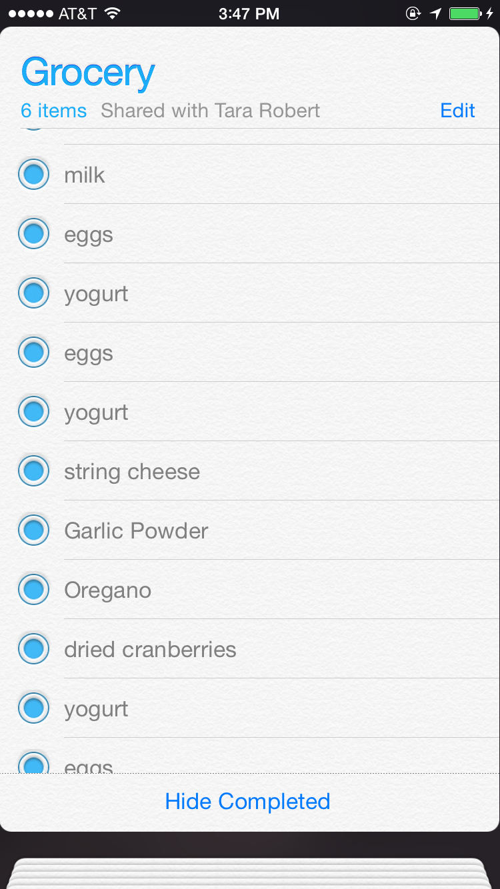
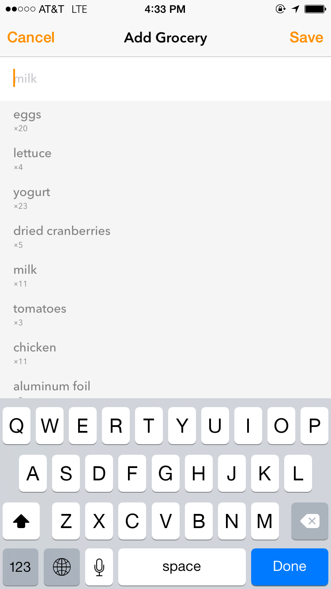

Hi, I’m James.
I made an app.
I think it’s pretty good, but we’ll get to the app in a second.
First, let me tell you a little story.
For a long time my wife and I shared a grocery list using the built-in “Reminders” app that is pre-installed on our iPhones.
We used it because it was already installed, and it worked.
 It’s backed up to iCloud, and we could use it from our iPhones, iPads, Macs, and iCloud.com. Pretty Sweet!
I just have two complaints:
What am I supposed to do? Lather a piece of wheat bread with cream cheese? I’m not an animal.
Sometimes I would go looking through the “completed” items to see if there was anything I should buy again and uncheck them, re-adding those things to my list. It kind of sucked though because I have hundreds (thousands?) of completed items in the grocery list.
Wouldn’t it be great if the things I’ve bought the most times were up at the top? Wait! I’m professional sorter and aggregator of lists! Maybe I can sort this list.
Only problem is: I don’t want to use a new grocery app, and have to start fresh. I want to sort this list. That I’ve been using for years. That I already shared with my wife.
So that’s what I did.
Daily Bread focuses on the fundamentals. I buy pretty much the same 10 groceries every week. That’s why the screen for adding a grocery shows the most common items. 
And you can just tap to add a grocery to the list. No Typing! I don’t care how good the new iOS 8 keyboards are. No keyboard is better than no keyboard at all.
And since it syncs with Reminders you can keep using your existing grocery list. You can still use iCloud.com. You don’t have to convince anyone else to install the app or mess around with sharing a new list. And you can switch back to using Reminders at any time (but you won’t want to)!
Oh, and you can use Siri: “Add eggs to my grocery list”
Making a grocery list should be quick and easy, and now it is.